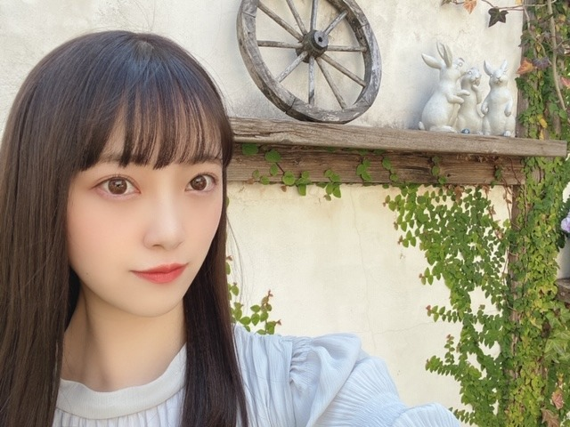
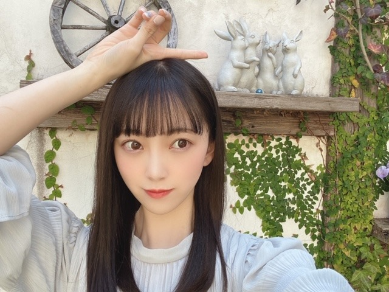
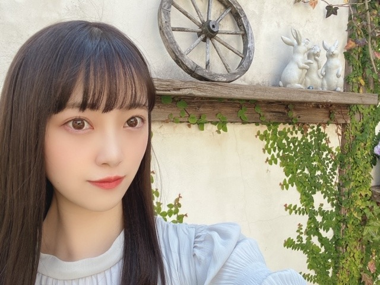
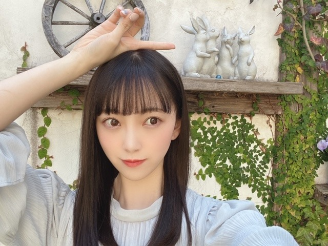

2020/0319Thuリンゴの余韻
こんにちは✿
昨日はレコメンに、みり愛と絢音が来てくれました
わ〜〜〜い
合間もずっとお喋りして
そのあとは2人がわたしのお家に泊まりにきて
それからまたお話ししてました(^-^)
楽しかったなぁ~
でも今ちょっと眠い...笑
今日も頑張りましょう!
レコメンパーソナリティもあと1回ですが
最後までよろしくお願いします
是非、聴いてください❁


室内だと暗め、陽に当たるとほんのり明るめ
になるよう染めていただいてから少し日にちが経ち
いい感じに色が抜けてきました
アッシュ系が好きなのでこれからも
くすみカラー色々挑戦したいです
このカラー名は Pale Mint Beige ❁ です
今日は天気がいいですね~ ❁
天気がいい日はお弁当を持って
牧場とか公園に行きたくなりますね



撮影スタジオが可愛かったので私服でパシャリ
この間1人で歩いていて4回つまずきました
久しぶりに履いた靴だからかな？とも思ったけど
スニーカーだしつまずいた場所段差もあったから
関係無さそう...
1人で転びそうになると恥ずかしいですよね
気をつけます
みなさんもお気をつけて...笑
では!
また更新しますね!
あ、皆さんおすすめの洋楽、
コメントにて教えてください!
こんにちは✿
昨日はレコメンに、みり愛と絢音が来てくれました
わ〜〜〜い
合間もずっとお喋りして
そのあとは2人がわたしのお家に泊まりにきて
それからまたお話ししてました(^-^)
楽しかったなぁ~
でも今ちょっと眠い...笑
今日も頑張りましょう!
レコメンパーソナリティもあと1回ですが
最後までよろしくお願いします
是非、聴いてください❁
室内だと暗め、陽に当たるとほんのり明るめ
になるよう染めていただいてから少し日にちが経ち
いい感じに色が抜けてきました
アッシュ系が好きなのでこれからも
くすみカラー色々挑戦したいです
このカラー名は Pale Mint Beige ❁ です
今日は天気がいいですね~ ❁
天気がいい日はお弁当を持って
牧場とか公園に行きたくなりますね


撮影スタジオが可愛かったので私服でパシャリ
この間1人で歩いていて4回つまずきました
久しぶりに履いた靴だからかな？とも思ったけど
スニーカーだしつまずいた場所段差もあったから
関係無さそう...
1人で転びそうになると恥ずかしいですよね
気をつけます
みなさんもお気をつけて...笑
では!
また更新しますね!
あ、皆さんおすすめの洋楽、
コメントにて教えてください!
2020/03/19 13:00
コメント(482)
未央奈さんってアニメとか見ていますか？
もし見ていたらオススメをブログに書いてくれると嬉しいです！
ちなみに自分のオススメはやはりNARUTOですね！
ブログ更新ありがとうございます！
もし見ていたらオススメをブログに書いてくれると嬉しいです！
ちなみに自分のオススメはやはりNARUTOですね！
ブログ更新ありがとうございます！
Dua LipaのNew RulesとかDon't Stop Nowとか？
Selena GomezのLove You Like A Love Songとかかな？？
写真良きです！！
Selena GomezのLove You Like A Love Songとかかな？？
写真良きです！！
未央奈さん、こんにちはぁ！ブログ更新ありがとうございます！
いい天気っていいですよね！(自分は暗いところも好きなんです。)
自分のおすすめの洋楽は、ザ･チェインスモーカーズの『Closer』っていう曲です！
未央奈さんつまずかないように気をつけてください！ではまたブログ更新した時に〜
いい天気っていいですよね！(自分は暗いところも好きなんです。)
自分のおすすめの洋楽は、ザ･チェインスモーカーズの『Closer』っていう曲です！
未央奈さんつまずかないように気をつけてください！ではまたブログ更新した時に〜
未央奈ちゃんインスタ更新ありがとう！
昨日レコメン聞いてて楽しすぎて自然と笑顔になれた〜！
やっぱりのりほりコンビ最高すぎるし、プラスプリン会！
もううう聞いてて幸せでした
髪色ほんとに似合ってるー！かわいい！
撮影スタジオ！！！なにかの雑誌かな？？arさんかな？？
解禁楽しみです！
昨日レコメン聞いてて楽しすぎて自然と笑顔になれた〜！
やっぱりのりほりコンビ最高すぎるし、プラスプリン会！
もううう聞いてて幸せでした
髪色ほんとに似合ってるー！かわいい！
撮影スタジオ！！！なにかの雑誌かな？？arさんかな？？
解禁楽しみです！
みおなさん！ブログ更新ありがとう！
残りも少ないレコメンですが、楽しみにしてますね！

おすすめの洋楽ですが、Green Dayなんていかがでしょう？
Basket Caseという楽曲がおすすめです

残りも少ないレコメンですが、楽しみにしてますね！
おすすめの洋楽ですが、Green Dayなんていかがでしょう？
Basket Caseという楽曲がおすすめです
突然なんだけどさ、3期生の毎日がBrand new dayってThe VampsのJust my typeにちょっと似てない？
堀ちゃんこんにちは！
今更ながら堀ちゃんにハマり始めた高校生です！
レコメン聴きたいけどエリア外なので聞けないのです…(´･ ･`)
Twitterの画像だけいつも楽しんでます！あと1回のパーソナリティ頑張ってください!!
静岡から応援しています〜
今更ながら堀ちゃんにハマり始めた高校生です！
レコメン聴きたいけどエリア外なので聞けないのです…(´･ ･`)
Twitterの画像だけいつも楽しんでます！あと1回のパーソナリティ頑張ってください!!
静岡から応援しています〜
ブログ更新ありがとうございます！！オススメの曲は、学校で歌ったOneDirectionのlive while we're youngですー！ぜひ聞いて見てください！！
プリシラ・アーン
MGMTのKids
TheCoralのInTheMorning
Weezerの3rdアルバム全曲
TravisのTheManWhoというアルバムの１から４までの流れが秀逸です。
BlurのGirls&Boys
などをおすすめします！
私も漢方飲んでますが、効果をキャンセルする食べ物や飲み物もあるので注意してくださいね。
TheCoralのInTheMorning
Weezerの3rdアルバム全曲
TravisのTheManWhoというアルバムの１から４までの流れが秀逸です。
BlurのGirls&Boys
などをおすすめします！
私も漢方飲んでますが、効果をキャンセルする食べ物や飲み物もあるので注意してくださいね。
マギー・リンデマン今聴いてる！やばい！いい！
洋楽じゃないけど
ドリカムの何度でもはよく聞く！！
ドリカムの何度でもはよく聞く！！
twenty one pilotsっていうアーティストオススメです
その中でもcar radioって曲が僕は一番好きです
是非聴いてみてください
その中でもcar radioって曲が僕は一番好きです
是非聴いてみてください
デッドオアアライブがオススメです
ディスコサウンドがパないです
曲はどれも良きです
ディスコサウンドがパないです
曲はどれも良きです
未央奈ちゃん＼(^o^)／お疲れさまでした
昨日のレコメンは凄く楽しかったよ＼(^o^)／
多分、新プリン会の名前は「マック会」だと思うよ
以前のまいちゅんのANNにも「ナゲットを食べた」って、
あと乃木坂の仕事現場もマネージャーさんがマックを買いに来るときがあるよね
さー、あってるかな？
そして、髪色の名前は本当なの？また適当に命名してないよね？（笑）
ごめんごめん、本当だと知ってるよ(*´ω`*)
ああ、来週は最後のレコメンか？
たむたむがレギュラーになって嬉しいけど、やっぱり未央奈ちゃんが居なくなると凄く寂しいよ
のりさんとの波長は凄く合うけど・・・
たむたむもきっとのりさんと仲良くなれると思うけど、
やっぱりのりさんと堀さんという雰囲気はまた別だと思うよ(｡>﹏<｡)
これからも頑張って(/･ω･)/
つまずかないように気をつけて
体調管理も気をつけて
昨日のレコメンは凄く楽しかったよ＼(^o^)／
多分、新プリン会の名前は「マック会」だと思うよ
以前のまいちゅんのANNにも「ナゲットを食べた」って、
あと乃木坂の仕事現場もマネージャーさんがマックを買いに来るときがあるよね
さー、あってるかな？
そして、髪色の名前は本当なの？また適当に命名してないよね？（笑）
ごめんごめん、本当だと知ってるよ(*´ω`*)
ああ、来週は最後のレコメンか？
たむたむがレギュラーになって嬉しいけど、やっぱり未央奈ちゃんが居なくなると凄く寂しいよ
のりさんとの波長は凄く合うけど・・・
たむたむもきっとのりさんと仲良くなれると思うけど、
やっぱりのりさんと堀さんという雰囲気はまた別だと思うよ(｡>﹏<｡)
これからも頑張って(/･ω･)/
つまずかないように気をつけて
体調管理も気をつけて
Taylor Swiftの22
Taylor SwiftのRED
Taylor SwiftのRED
こんにちは！
知ってる中では仮面ライダーキバのBreak the Chainとかかな
知ってる中では仮面ライダーキバのBreak the Chainとかかな
ブログ更新ありがとう
パーカーが好きです
パーカーが好きです
洋楽のコメ。映画の曲。
Take a look through my eyes
（ブラザー・ベアの歌）
Your Heart Will Lead You Home
（ティガームービーの歌）
Ordinary Miracle
（シャーロットの贈り物の歌）
The climb
（ハンナモンタナ ザ・ムービーの歌）
You'll always find your way back home
（上に同じ）
Take a look through my eyes
（ブラザー・ベアの歌）
Your Heart Will Lead You Home
（ティガームービーの歌）
Ordinary Miracle
（シャーロットの贈り物の歌）
The climb
（ハンナモンタナ ザ・ムービーの歌）
You'll always find your way back home
（上に同じ）
俺のおすすめする洋楽は！
AviciiのWake me upです！洋楽なんだけどEDMも入ってて盛り上がるいい曲です！Aviciiは他にもいい曲ありますよ！
AviciiのWake me upです！洋楽なんだけどEDMも入ってて盛り上がるいい曲です！Aviciiは他にもいい曲ありますよ！
au PAYでは知ってますと
堂々と答えた堀未央奈さん
ブログ更新ありがとう⁉︎
レコメン聴いたよ〜⁉︎
旧プリン会メンバーさん
お疲れ様でした⁉︎
本当に名前はどんな感じになったんだろう⁇
好きな食べ物屋さんの名前でしたっけ⁇
当てるの無理〜〜(^ ^)
いつも以上にワチャワチャ感が凄かった
次回で未央奈ちゃんがラストになるのが
寂しいなぁ〜
レコメンの時の洋服もいい感じでしたね
髪色もいい感じでした⁉︎
最後にあまりコケると
まなったんになりますよ〜(^^)笑笑
堂々と答えた堀未央奈さん
ブログ更新ありがとう⁉︎
レコメン聴いたよ〜⁉︎
旧プリン会メンバーさん
お疲れ様でした⁉︎
本当に名前はどんな感じになったんだろう⁇
好きな食べ物屋さんの名前でしたっけ⁇
当てるの無理〜〜(^ ^)
いつも以上にワチャワチャ感が凄かった
次回で未央奈ちゃんがラストになるのが
寂しいなぁ〜
レコメンの時の洋服もいい感じでしたね
髪色もいい感じでした⁉︎
最後にあまりコケると
まなったんになりますよ〜(^^)笑笑
OASIS、weezer、GREEN DAY、Bloc Party
Ash、FRIENDLY FIRERS
Ash、FRIENDLY FIRERS
とりあえずレコメンあと1回頑張ってください！
おすすめの洋楽はワイルドスピードのアイスブレイクのサントラめっちゃいいので是非聴いてみてくださいね！
おすすめの洋楽はワイルドスピードのアイスブレイクのサントラめっちゃいいので是非聴いてみてくださいね！
未央奈〜！！
ブログ更新ありがとう
レコメン！もあと1回か…
頑張って
おすすめの洋楽は…ボヘミアンのやつ笑笑
次の更新も待ってるね〜！！
ブログ更新ありがとう
レコメン！もあと1回か…
頑張って
おすすめの洋楽は…ボヘミアンのやつ笑笑
次の更新も待ってるね〜！！
さすがにその髪色の名前までまさかラベンダーピンクみたいにオリジナルぢゃないよね
いやー、旧プリン会の回もおもろかったー
来週のりさん号泣、否、慟哭か
ダウンロードしたアナスターシャを現在ヘビロテ中っスよ〜
公園で4回も立ち直った（Xこけた）未央奈っち、これからも何度でも何度でも 立ち上がって、「何回もこける私ダメだな〜」から「何回も立ち上がる私スゴイな〜」ってなっちゃってー
立ち上がって、「何回もこける私ダメだな〜」から「何回も立ち上がる私スゴイな〜」ってなっちゃってー
いやー、旧プリン会の回もおもろかったー
来週のりさん号泣、否、慟哭か
ダウンロードしたアナスターシャを現在ヘビロテ中っスよ〜
公園で4回も立ち直った（Xこけた）未央奈っち、これからも何度でも何度でも
レコメンとっても楽しかったです！御三方を拝見してると、私も元気を貰えます！！ありがとうございます
洋楽じゃないけど、pay money to my painってバンドがおすすめ！
全曲が英詞になってます。
特に「Another day comes」がいい曲だと思う！
全曲が英詞になってます。
特に「Another day comes」がいい曲だと思う！
レコメンあと1回だって思うととても悲しいです
"旧"プリン会の次の名前もブログで教えてくれたりしますか？笑
洋楽だとチャーリープースがいいなと思います
"旧"プリン会の次の名前もブログで教えてくれたりしますか？笑
洋楽だとチャーリープースがいいなと思います
ブログ更新ありがとう！
髪色かわいい〜〜！！最近は未央奈と同じ色に染めたいって思ってる！！あとお泊まり楽しそう！！うらやま！！
転ぶのはほんとに気をつけてください〜笑私も気をつけます笑
洋楽はダントツでMake it shineが好きです！曲調が好み！！あと歌詞もステキなんです！
未央奈がインスタで紹介してくれたリップ買ったので友達と遊ぶ時に使いたいと思います！楽しみ！
あとヘアケアの仕方とか使ってるものとかよかったら教えてくれたら嬉しいです！
体調にお気をつけて！
髪色かわいい〜〜！！最近は未央奈と同じ色に染めたいって思ってる！！あとお泊まり楽しそう！！うらやま！！
転ぶのはほんとに気をつけてください〜笑私も気をつけます笑
洋楽はダントツでMake it shineが好きです！曲調が好み！！あと歌詞もステキなんです！
未央奈がインスタで紹介してくれたリップ買ったので友達と遊ぶ時に使いたいと思います！楽しみ！
あとヘアケアの仕方とか使ってるものとかよかったら教えてくれたら嬉しいです！
体調にお気をつけて！
Nightcore-Wedont sleep at night いいですよ！
こんばんわ！堀ちゃんのブログを見て頑張ろうと日々思えてます！これからも応援し続けます！！頑張ってください
堀さんお花みたいな顔
公式ツイートに掲載されたレコメン！の写真かわいかったよ(*^O^*)
ブログの写真も、映えてます！
ピクニックは、そもそもが広い野外で密閉空間はまず有り得ないので、混雑地等をさける、限られたメンバーで把握できる間がらであるなら、そう遠くない日にリスクは低いとして自粛解除になると思うんですが、※あくまで個人的な考えです。
札幌も、天気が良く、春な１日でした。明日は一転雨ですf(^^;
ブログの写真も、映えてます！
ピクニックは、そもそもが広い野外で密閉空間はまず有り得ないので、混雑地等をさける、限られたメンバーで把握できる間がらであるなら、そう遠くない日にリスクは低いとして自粛解除になると思うんですが、※あくまで個人的な考えです。
札幌も、天気が良く、春な１日でした。明日は一転雨ですf(^^;
堀ちゃん、ブログ更新ありがとう！
おすすめの洋楽は
Joe SampleのI’m Coming Back Againと
Bruno MarsのRunaway Babyです！
よかったら聞いてみてください！
おすすめの洋楽は
Joe SampleのI’m Coming Back Againと
Bruno MarsのRunaway Babyです！
よかったら聞いてみてください！
zara larssonのdon't worry about meオススメです！流れるような気持ちの良い曲です！是非！
めっちゃかわいー！！大好きです、、、儚げみおなちゃん尊過ぎ！！、
私のお勧めの洋楽はMaroon5のsugar、payphoneです！あと、Clean BanditのSymphony も素敵なので是非聴いてください！どれも恋愛曲で、歌詞の意味も是非見て欲しいです♡
私のお勧めの洋楽はMaroon5のsugar、payphoneです！あと、Clean BanditのSymphony も素敵なので是非聴いてください！どれも恋愛曲で、歌詞の意味も是非見て欲しいです♡
Hoobastankっていうアメリカのバンドが好きです。The Reasonは安定の名曲だし、Same DirectionとかMy Turnもかっこいいのでもし聞いたことなかったら是非。
堀未央奈❤こんばんは❗昨日は、ご苦労様❗ゲストでみり愛来てくれたんだね(^-^)vその後未央奈の家に泊まりに行って遅くまで話していたの？出来れば俺も未央奈の家に泊まりに行きたいな(^-^)v髪染めたの？違うよね？段差の所で転んで怪我しなかった？大丈夫？これから気を付けてね。今日も可愛いね(*^_^*)大好きだよ❤これからも体調に気を付けて頑張ってね(*^_^*)応援しているからね(*^O^*)
やほー！
洋楽と邦楽の折衷だけどMonkey Majik好き！！
『空はまるで』とか！！
洋楽と邦楽の折衷だけどMonkey Majik好き！！
『空はまるで』とか！！
未央奈、相変わらず可愛いな〜
仕事終わりに癒されてます。
レコメンあと１回、とても悲しいです…
毎週楽しみにしていたので…
こけないでよ！笑
見たら笑っちゃいそう
洋楽はEd Sheeran聞いてますかな！
リズムが好きなんですよね〜
仕事終わりに癒されてます。
レコメンあと１回、とても悲しいです…
毎週楽しみにしていたので…
こけないでよ！笑
見たら笑っちゃいそう
洋楽はEd Sheeran聞いてますかな！
リズムが好きなんですよね〜
未央奈可愛い大好きです！
ストレートかわいいよーーー
みおちゃんブログ更新ありがとう！
プリン会好きすぎる(*¨*)！
レコメンありがとう♡
あと1回だなんて、、、( ･ ･̥ )
洋楽か〜
スティーヴィーワンダーとアヴリル
おすすめ〜( ᵕᴗᵕ )！
アヴリルのHe Wasn'tすごく好き( ¨̮ )！
プリン会好きすぎる(*¨*)！
レコメンありがとう♡
あと1回だなんて、、、( ･ ･̥ )
洋楽か〜
スティーヴィーワンダーとアヴリル
おすすめ〜( ᵕᴗᵕ )！
アヴリルのHe Wasn'tすごく好き( ¨̮ )！
OneDirection
Carly Rae Jepsen
あたり聞いてみて
あまり洋楽知らないけどこの辺はいい曲だと思う
Carly Rae Jepsen
あたり聞いてみて
あまり洋楽知らないけどこの辺はいい曲だと思う
こんばんは。
レコメン癒されまくりでしたよ。
和んだ空気感、3人の絆が垣間見えたし、楽しかったです。
思い出にもなります。
それにしてもプリン会の新しい名前が気になります。
残り1回、楽しみたいですね。
最高の思い出となりますよに。
写真が凄く可愛く癒されます。
ストレートで落ち着いた雰囲気で可愛く綺麗なお姉さんです。
また癒しのコレクションのレベルが上がりましたよ。
コレクションを見ると落ち着くのです。
とても癒されてる日常です。
色も良い感じですね。
沢山のくすみカラーチャレンジ楽しみにしてますね。
天気良く晴れて暖かったですね。
公園でお弁当食べるの好きです。
読書したり、草の上で昼寝したり、白ワイン飲んだり、ゆったりのんびり過ごせます。
つまずきには気をつけてくださいよ。
自分は運動不足のせいかよくやります。
お互いに気をつけたいですね。
お忙しい中更新ありがとうございました。
洋楽ですか、自分は古い曲ばかりで、最近でもテイラースイフトくらいなので参考にならなくてごめんなさい。
スギ花粉のピークは過ぎたようで、これからヒノキに移っていくのかな。負けたくないですね。
頑張って行きましょう！
レコメン癒されまくりでしたよ。
和んだ空気感、3人の絆が垣間見えたし、楽しかったです。
思い出にもなります。
それにしてもプリン会の新しい名前が気になります。
残り1回、楽しみたいですね。
最高の思い出となりますよに。
写真が凄く可愛く癒されます。
ストレートで落ち着いた雰囲気で可愛く綺麗なお姉さんです。
また癒しのコレクションのレベルが上がりましたよ。
コレクションを見ると落ち着くのです。
とても癒されてる日常です。
色も良い感じですね。
沢山のくすみカラーチャレンジ楽しみにしてますね。
天気良く晴れて暖かったですね。
公園でお弁当食べるの好きです。
読書したり、草の上で昼寝したり、白ワイン飲んだり、ゆったりのんびり過ごせます。
つまずきには気をつけてくださいよ。
自分は運動不足のせいかよくやります。
お互いに気をつけたいですね。
お忙しい中更新ありがとうございました。
洋楽ですか、自分は古い曲ばかりで、最近でもテイラースイフトくらいなので参考にならなくてごめんなさい。
スギ花粉のピークは過ぎたようで、これからヒノキに移っていくのかな。負けたくないですね。
頑張って行きましょう！
ブログ更新ありがとう
お勧めの洋楽は
1980年代のバングルス
マニックマンデー
in your room です
かなり古いですが、
一回聴いてみてください
お勧めの洋楽は
1980年代のバングルス
マニックマンデー
in your room です
かなり古いですが、
一回聴いてみてください
ブログ更新ありがとう！未央奈のストレートヘア姿ほんとかわいい！
んーよく聞いてる洋楽は、もしかしたら、未央奈も聞いてるかも？だけど、スズキのスイフトのCMにもなってるZeddさんのBeautiful Nowとかはモチベーション上げたい時とか聞いたらいいかもー。
あと、個人的に好きなのは、おそらく誰でも知ってると思うんだけど、カーリー・レイ・ジョプセンさんのCall mr maybeかな。
未央奈はどんな洋楽聞いてる？？
んーよく聞いてる洋楽は、もしかしたら、未央奈も聞いてるかも？だけど、スズキのスイフトのCMにもなってるZeddさんのBeautiful Nowとかはモチベーション上げたい時とか聞いたらいいかもー。
あと、個人的に好きなのは、おそらく誰でも知ってると思うんだけど、カーリー・レイ・ジョプセンさんのCall mr maybeかな。
未央奈はどんな洋楽聞いてる？？
p!nkっていうアーティストの「today’s the day」っていう曲いいですよ〜！プロ野球の元巨人長野選手の登場曲でした^ ^
未央奈ちゃんブログ更新ありがとう！
レコメン良かった！
またコメントします！
レコメン良かった！
またコメントします！


初めてコメントします！
オススメの洋楽はAnne-Marieさんの
[Speak Your Mind（Deluxe）]のアルバムに収録されている曲全部オススメです！是非聞いてみてください！
（聞いたことあったらすみません ♂️）